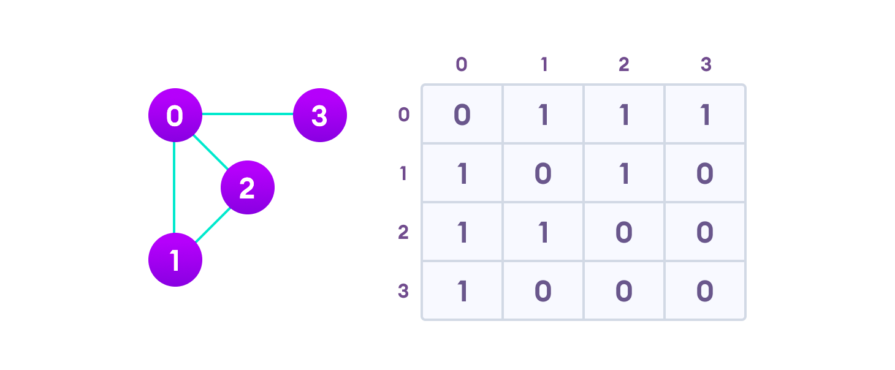
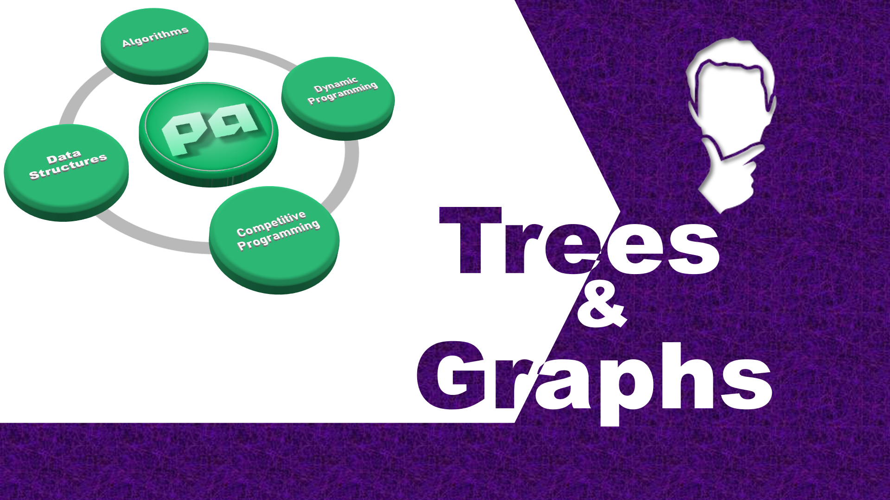

Trees and graphs are common words which we have heard in our lifetime at least once. That's why it's somehow recognizable from reading itself what type of data storing structure we are referring to. So, let’s first understand what we are going to deal with here: Non-linear data structure
The Graph consists of different vertices (also called nodes) which are connected by edges. Also, the concept of the graph says we can travel from one node to another node via edges. This thing makes the graph of two types:
Let's discuss how can we approach problems related to graph :
💡 Generally, you are given 'N' and 'M' two space-separated integers
which denotes number of nodes and the number of edges respectively. Followed by 'M' subsequent lines which contain two space-separated integers 'u' and 'v' whose values are from 1 ≤ {u, v} ≤ N which denotes that there is an edge between u & v.
Let’s take an example to understand the above paragraph.
E.g. N = 4, M = 3, this denotes our graph contains 4 nodes, and there are 3
edges in our graph.
Now, you will be given with M subsequent lines, i.e. 3 lines. In each line
you will be given 2 space-separated integers as below:
u v
1 2
2 3
3 4
where each line represents an edge, i.e. 1 2 simply means that there is an
edge in graph which connects node 1 to node 2, and so on…
After providing you this general input format, the problem may ask you any
logical question which requires traveling from one node to another in a
graph for the required answer.
So, here the following question arises,
There are two preferable methodologies for storing the graph :
1. Adjacency Matrix :
We create a N X N matrix where indexes of this matrix (i, j) denote the state (either connected or not) of two nodes in the graph. If the value is non-zero at (i, j) index in the matrix then this indicates that there is an edge present between the node i → j.
have a look at below diagram
Detailed Explnation and code is written in next article, click here to read it.
2. Adjacency List :
It stores only those nodes which are connected via edges which somehow helped in reduce the space complexity. Each node stores its own array which contains the record for its neighbor node. We need to store this information using 2D array as we have done in the adjacency matrix but this time we are going to use dynamically allocated memory.
have a look at below diagram
Detailed Explnation and code is written in next article, click here to read it.
This article is contributed by MD Zuhair & Rishabh Roshan
So that’s it for this article we will be coming up with our next article on further topics of Graph Theory very soon till then keep learning, keep coding, keep reading and keep improving !!
Happy Coding
By Programmers Army 😊